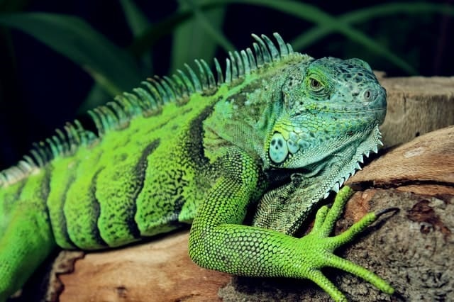
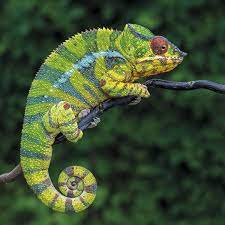
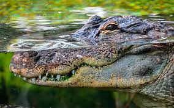

Iguanas verdes
Animales diurnos caracterizados por su cabeza ancha, hocico redondo, papada colgante en la garganta, cuerpo robusto, 4 fuertes patas con uñas duras y afiladas y cresta desde la cabeza hasta su larga, delgada y aplanada cola que les sirve como látigo para defenderse.
Son excelentes nadadoras y trepadoras. Las hembras adultas pueden medir hasta 2 metros y pesar de 4 a 6 kilos, mientras que los machos pueden alcanzar hasta 2.2 m y pesar de 8 a 10 kilos, aunque se tienen reportes de machos de hasta 15 kg.

Camaleones
Los camaleones son una familia, de pequeños saurópsidos escamosos. Existen cerca de 161 especies de camaleones, la mayor parte de ellas en África al sur del Sáhara. En América se llama a menudo camaleones a lagartos de la familia de los anoles, que no guardan ningún parentesco especial con los verdaderos camaleones.

Cocodrilos
Crocodylidae es una familia de saurópsidos arcosaurios comúnmente conocidos como cocodrilos. Incluye a catorce especies actuales. Se trata de grandes reptiles semiacuáticos que viven en las regiones tropicales de África, Asia, América y Australia.

Tortugas
También conocidos como quelonios, las tortugas son un tipo de reptiles caracterizados por el sólido caparazón que protege sus órganos vitales del que emergen la cabeza, las patas y la cola. Son animales ovíparos que cavan sus nidos en la tierra, donde llevan a cabo la incubación de los huevos.